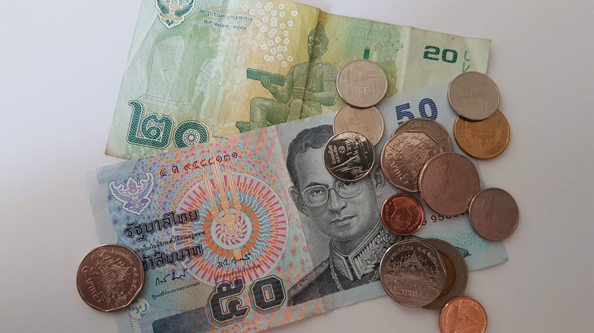
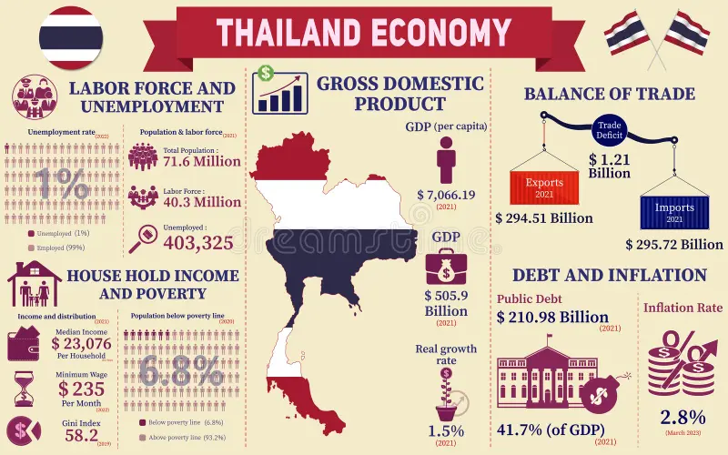

Actividad Económica de Tailandia
La economía de Tailandia es la segunda más grande del sudeste asiático, con un PIB de aproximadamente 514.8 mil millones de dólares en 2023. Es una economía de mercado abierta, dependiente de las exportaciones, que representan el 58% del PIB.
El sector agrícola es un pilar fundamental, empleando a una gran parte de la población. Tailandia es el mayor exportador mundial de arroz y un líder en productos como caucho, azúcar y pescado. En 2018, produjo 1.7 millones de toneladas de carne de pollo.
La industria manufacturera ha crecido significativamente, especialmente en electrónica, automóviles y textiles. Tailandia es el undécimo productor mundial de vehículos, con 2 millones de unidades en 2019, impulsado por inversiones japonesas.
El turismo es una fuente clave de ingresos, contribuyendo con el 7% del PIB. En 2018, Tailandia recibió 38.2 millones de turistas, siendo el noveno país más visitado del mundo, gracias a sus playas, templos y cultura.
El país también produce gemas como rubíes y zafiros, siendo uno de los mayores exportadores mundiales. Además, la joyería es un sector importante dentro de las exportaciones.
En energías no renovables, Tailandia extrajo 202,100 barriles de petróleo por día en 2020 y es un importador significativo de gas natural. También invierte en energías renovables, con 1.5 GW de energía eólica y 2.9 GW de energía solar en 2020.
A pesar de su crecimiento, Tailandia enfrenta desafíos como la desigualdad regional y la trampa de ingresos medios. El plan Thailand 4.0 busca impulsar una economía basada en la innovación para superar estos obstáculos.
La posición geográfica de Tailandia, como centro de la ASEAN, favorece el comercio y la inversión extranjera, especialmente con China, su principal socio comercial.
 